WSL2。有点懒，用不惯无界面的 Linux。用了几天之后，感觉还挺不错的……
这章节将Ubuntu系统准备好，版本是：22.04
1、运行（win + R）中输入
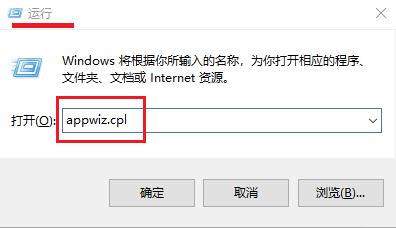
2、点击“启用或关闭Windows功能”，之后启用“适用于Linux的Windows子系统”
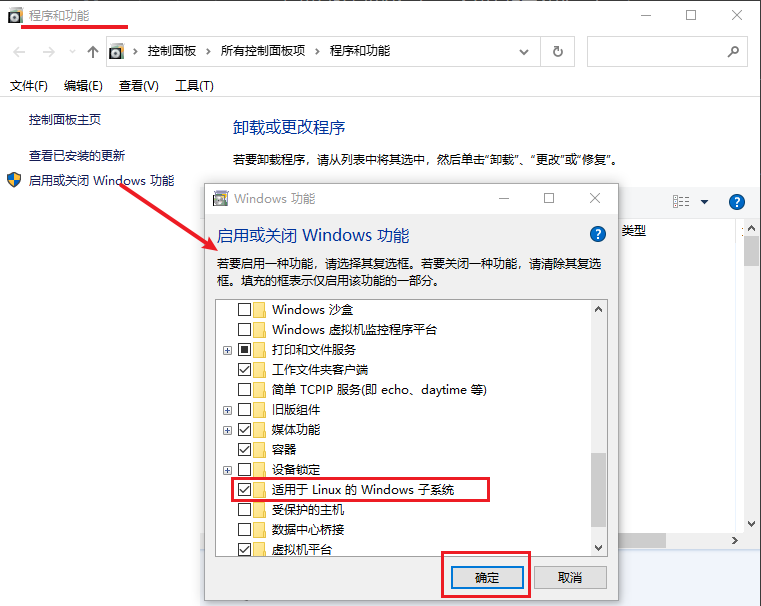
点击“确定”，应该会提示你重启
你也可以在命令提示符（cmd）或者PowerShell中输入：
3、设置默认版本为WSL2
wsl --set-default-version 2
4、安装Ubuntu22.04
这里是在
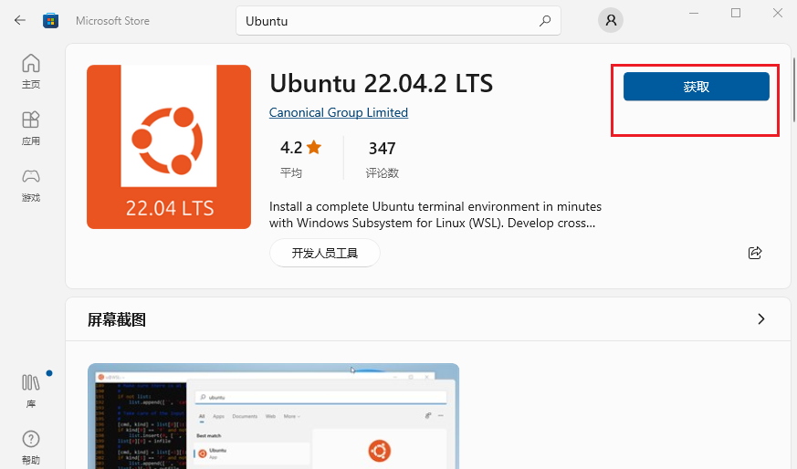
5、设置默认root账户
ubuntu2204.exe config --default-user root
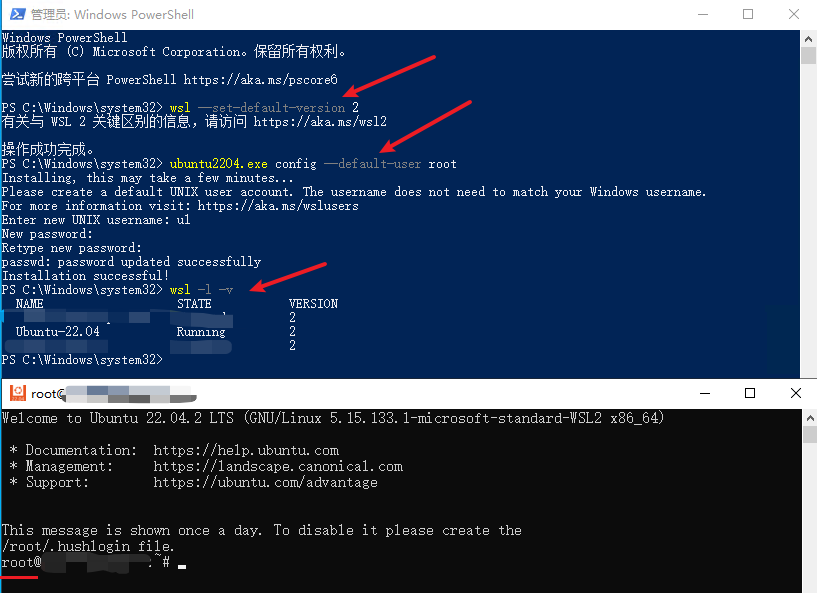
在我的电脑（win + E）中的地址栏或者运行（win + R）中输入：
# 下面访问的是 C:\Users
/mnt/c/Users
这里基本上都是在Windows子系统Ubuntu中的操作。
# 这里用的是阿里的
sed -i s@/archive.ubuntu.com/@/mirrors.aliyun.com/@g /etc/apt/sources.list
sed -i s@/security.ubuntu.com/@/mirrors.aliyun.com/@g /etc/apt/sources.list
apt clean
apt update -y
已经默认安装了
apt install python3-pip
# 临时使用清华镜像来升级 pip
python3 -m pip install -i https://pypi.tuna.tsinghua.edu.cn/simple --upgrade pip
# 全局设置
pip config set global.index-url https://pypi.tuna.tsinghua.edu.cn/simple
apt install python3-venv
官网：Rust 程序设计语言 | 安装 Rust - Rust 程序设计语言
高呼：“锈化、锈化、锈化……”。这个得吐槽一下，怎么弄个啥都这么慢，都得镜像……烦死了。
检查一下是否安装：
# 检查 curl 版本
curl --version
# 如果没有安装，安装一下
apt install curl
修改文件：
export RUSTUP_DIST_SERVER=https://mirrors.ustc.edu.cn/rust-static
export RUSTUP_UPDATE_ROOT=https://mirrors.ustc.edu.cn/rust-static/rustup
这里咱得得瑟一下：咱就是直接用windows文件资源管理器找到的目标文件，之后使用windows的文本编辑软件修改的。简直爽歪歪啊！修改完之后需要刷新一下：
source /root/.bashrc
curl --proto '=https' --tlsv1.2 -sSf https://sh.rustup.rs | sh
安装完之后会有个提示，也让你刷新一下
source "$HOME/.cargo/env"
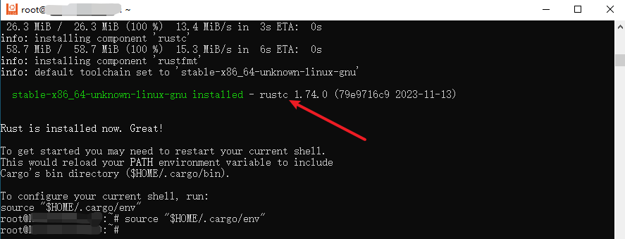
参考：crates.io-index.git | 镜像站使用帮助 | 清华大学开源软件镜像站
文件路径是：
[source.crates-io]
replace-with = 'mirror'
[source.mirror]
registry = "https://mirrors.tuna.tsinghua.edu.cn/git/crates.io-index.git"
应该安装什么版本以及到哪里下载，您可以查看：大语言模型-番外篇 - xiaodu114.github.io
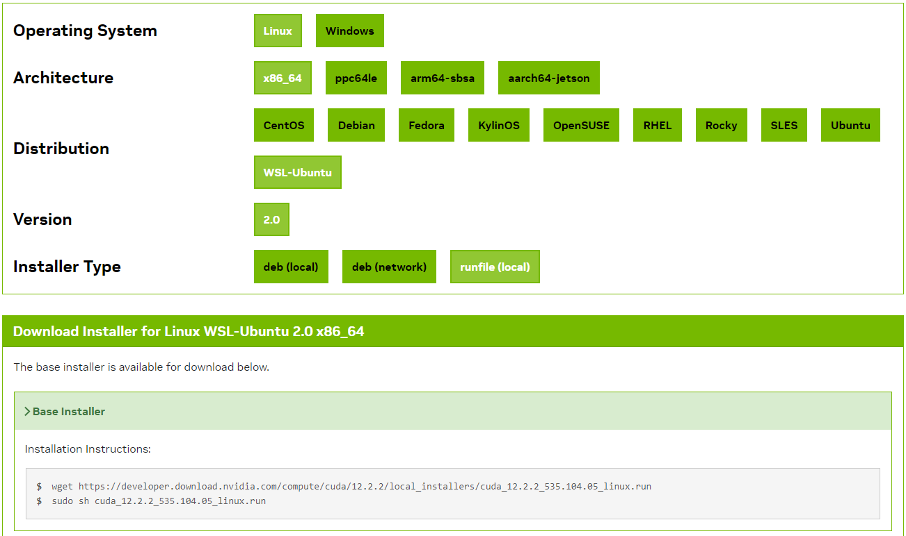
如上图，这里有三种安装方式：
安装之前还是先检测一下：
这里没有使用
sh cuda_12.2.2_535.104.05_linux.run
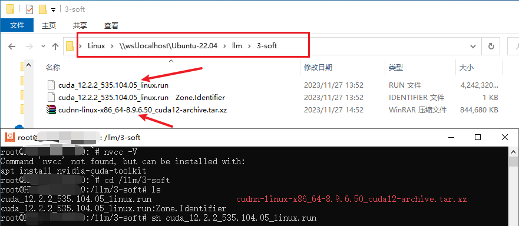
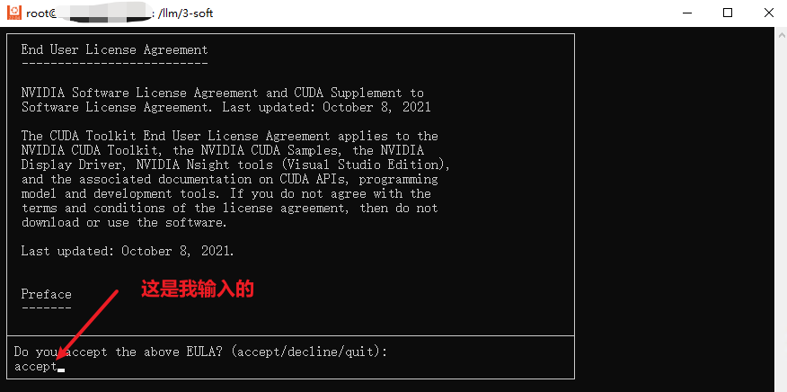
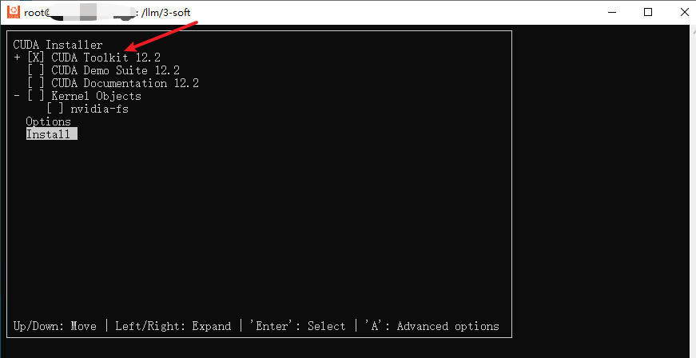
成功之后给出了下面的提示：
===========
= Summary =
===========
Driver: Not Selected
Toolkit: Installed in /usr/local/cuda-12.2/
Please make sure that
- PATH includes /usr/local/cuda-12.2/bin
- LD_LIBRARY_PATH includes /usr/local/cuda-12.2/lib64, or, add /usr/local/cuda-12.2/lib64 to /etc/ld.so.conf and run ldconfig as root
To uninstall the CUDA Toolkit, run cuda-uninstaller in /usr/local/cuda-12.2/bin
***WARNING: Incomplete installation! This installation did not install the CUDA Driver. A driver of version at least 535.00 is required for CUDA 12.2 functionality to work.
To install the driver using this installer, run the following command, replacing <CudaInstaller> with the name of this run file:
sudo <CudaInstaller>.run --silent --driver
Logfile is /var/log/cuda-installer.log
根据上面给出的提示需要修改一下环境变量，这里修改的仍然是：
export PATH=/usr/local/cuda-12.2/bin:$PATH
export LD_LIBRARY_PATH=/usr/local/cuda-12.2/lib64:$LD_LIBRARY_PATH
之后记得刷新一下哦！
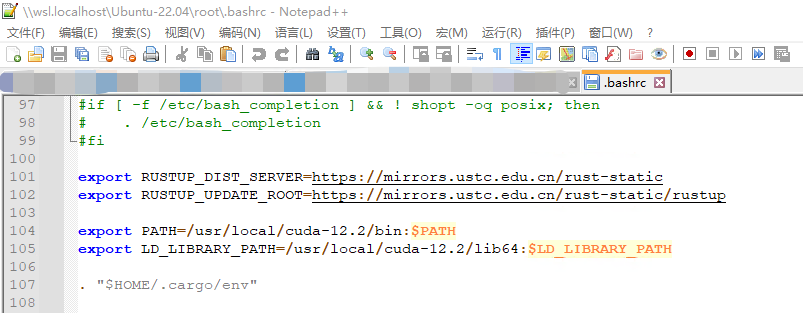
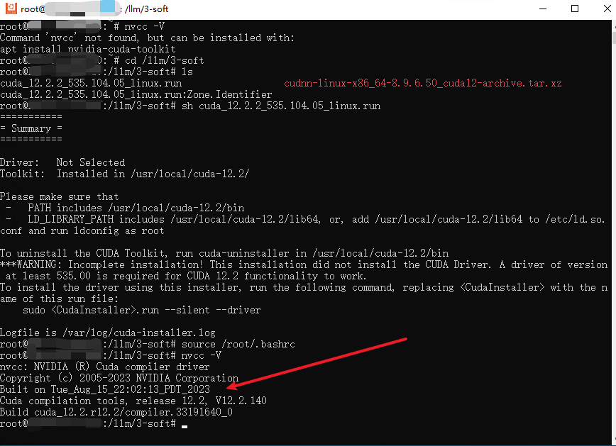
# 监控一下GPU状态
watch -n 1 nvidia-smi
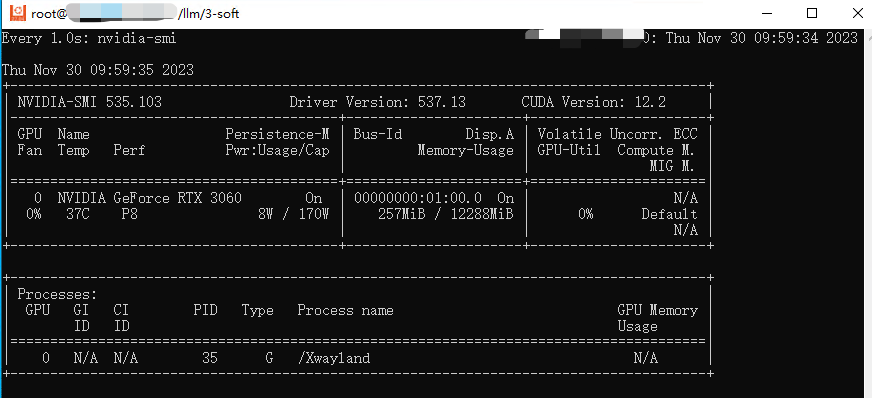
有了上面安装
这里还有安装向导：Installation Guide - NVIDIA Docs
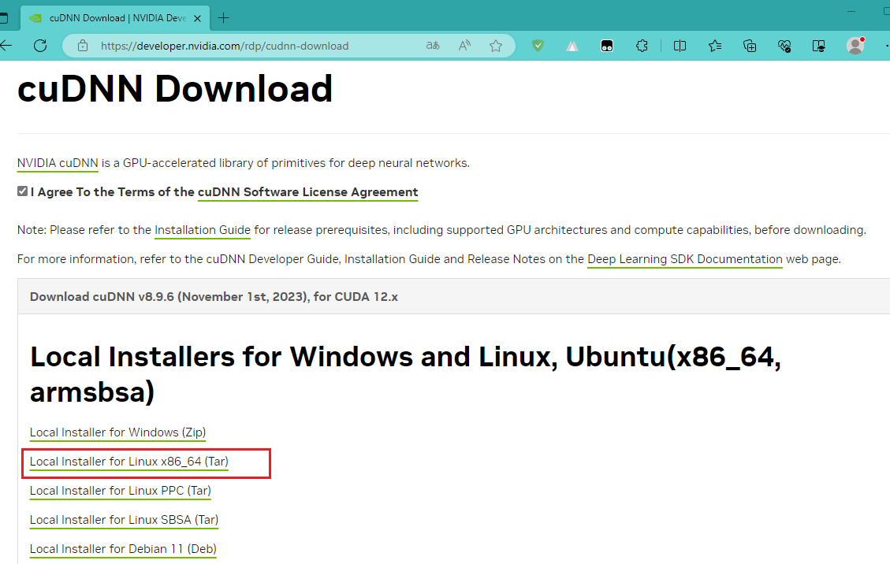
这里下载的是Tar版本的，上面截图已经出现过了，和run文件一起。
按照惯例安装之前先检查一下：
cat /usr/local/cuda/include/cudnn_version.h | grep CUDNN_MAJOR -A 2
下面开始安装
tar -xvf cudnn-linux-x86_64-8.9.6.50_cuda12-archive.tar.xz
# 注意拷贝的目标文件夹
cp cudnn-*-archive/include/cudnn*.h /usr/local/cuda-12.2/include
cp -P cudnn-*-archive/lib/libcudnn* /usr/local/cuda-12.2/lib64
chmod a+r /usr/local/cuda-12.2/include/cudnn*.h /usr/local/cuda-12.2/lib64/libcudnn*
安装结束，接着有检查了一次，看一下截图：
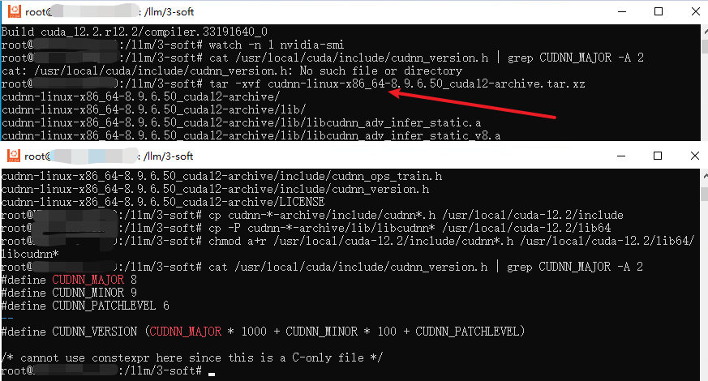